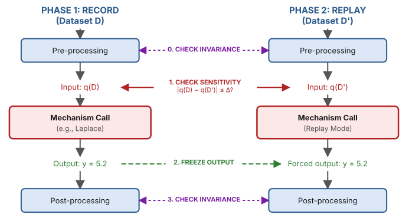

Research post: Privacy in theory, bugs in practice
This blog post is written by David Erb and Jack Fitzsimons; I helped with the editing. It is based on our paper Privacy in Theory, Bugs in Practice: Grey-Box Auditing of Differential Privacy Libraries by Tudor Cebere, David Erb, myself, Aurélien Bellet, and Jack Fitzsimons. This work has recently been accepted to PETS 2026 and the code is available as an open-source Python package.
Here's something that happens a lot with differential privacy.
You design a pipeline. You pick your primitives carefully: Laplace here, Gaussian there, an exponential mechanism for selection. You compose them using an accountant. You check the math. Everything looks right. You ship it.
Then someone finds a bug, and your \(\varepsilon\) was a lie.
The frustrating part is that these bugs are rarely in the mechanisms themselves1. Rather, they're often in the glue: a sensitivity calculated from uncensored data instead of clipped data, a noise scale that accidentally depends on the dataset, a loop counter derived from a private quantity. The kind of thing that doesn't crash, doesn't produce obviously wrong results, and doesn't show up in any output you'd think to inspect.
So how do you catch these? Ideally, the same way you catch other bugs: with tests. In our new paper, we built a tool that does exactly this. It can run in a CI pipeline, integrates with pytest, and found 13 previously unknown privacy violations across 12 widely used open-source DP libraries. This post explains how it works.
Why existing approaches don't quite fit
Two main research directions exist for catching differential privacy bugs.
Distributional auditing treats the pipeline as a black box: run it on neighboring datasets, collect output samples, try to distinguish the distributions. This is conceptually clean, and there's been a lot of excellent work on making it practical. But for a complex pipeline with high-dimensional outputs and many composed mechanisms, the number of samples you need grows fast. Prior work showed that verifying privacy with black-box access is computationally intractable in general. And even when the test does detect a violation, it only tells you "something is wrong somewhere", not where.
Formal verification goes the other direction: prove at compile time that the code satisfies DP. Systems like Fuzz and Duet can do this. The catch is that you have to rewrite your pipeline in a specialized language with a restricted type system — a non-starter for most teams working in Python.
What we want is something in between: a tool that finds bugs in real code, written in real languages, and runs in CI alongside your other tests.
The key structural observation
Let's take a step back and look at what a DP pipeline actually looks like. Almost always, it's a chain:
The pre-processing computes a query on the data. The primitive adds calibrated noise. The post-processing is some deterministic transformation of the noisy output, which is often also the pre-processing for the next primitive. This is how DP is designed to work: you build complex functionality by composing simple mechanisms with known privacy guarantees, ideally from trusted implementations like OpenDP.
If you trust the Laplace mechanism, re-testing it on every run tells you nothing new. The bugs live in the integration layer: the code that computes the query, determines the sensitivity, chooses the noise scale, and passes everything to the primitive. And that code is supposed to be data-independent (aside from the query input itself), with the query's influence bounded by the declared sensitivity.
So instead of auditing the full pipeline's output distribution, we can check two simpler conditions.
-
Invariance. Everything outside the DP primitives (the control flow, the parameters, the post-processing, etc.) must be identical when we switch from dataset \(D\) to a neighboring dataset \(D'\), provided we hold the primitives' outputs fixed.
-
Sensitivity. The inputs fed to each primitive on \(D\) and \(D'\) must differ by at most the declared sensitivity: \(|q(D) - q(D')| \le \Delta\).
If both conditions hold and the primitives are correctly implemented, the pipeline is DP. If either fails, we've found a bug — and we know exactly which primitive call or processing step triggered it.
Record and replay
Here's how we check those conditions in practice. We call the approach Re:cord-play, and it needs only two executions of the pipeline.

In the record phase, we run the pipeline on dataset \(D\). Every time a DP primitive is called, a hook logs what mechanism was called, its parameters (noise scale and declared sensitivity), the input query value \(q(D)\), the PRNG state, and the exact output.
In the replay phase, we run the pipeline on a neighboring dataset \(D'\). But when a primitive is called, instead of executing it, the hook does three things. First, it checks that the mechanism type and parameters match the recorded trace: if not, it means that the control flow or parameters depend on the data, and that's a bug. Second, it logs the new input \(q(D')\). Third, and this is the key move, it returns the recorded output from the first phase.
Why freeze the output? Consider a pipeline with two primitives. After the first, some post-processing feeds into the second. If we let the first primitive produce different outputs on \(D\) and \(D'\) (the inputs differ, so the outputs will too), the post-processing will diverge. When the second primitive is called, we might see different parameters, but that's just because the first primitive's output was different, not because of a data-dependent bug. By freezing outputs, we eliminate this source of divergence. Any remaining difference between the two runs is a real bug.
After replay, we compare the logged inputs. If (|q(D) - q(D')| > \Delta) for any primitive call, the declared sensitivity was wrong.
Let me make this concrete. Suppose your pipeline computes a noisy scaled count.
In the record phase on \(D = {0,0,0}\) with a multiplier of 2, the hook logs:
mechanism = Laplace, sensitivity = 1, input = 6, output = 6.8. In the
replay phase on \(D' = {0,0,0,0}\), the input becomes 8. The distance |8-6|=2
exceeds the declared sensitivity of 1. Bug found, and we know it's at the
first Laplace call.
What about untrusted primitives?
Everything above assumes the primitives themselves are correct. That's reasonable if you're using a vetted library, but what if you've written a custom mechanism?
We extended the framework to handle this with Re:cord-play-sample. Once Re:cord-play gives us the trace, we know the exact inputs each primitive received. We can treat each primitive individually as a black box: run it many times on both inputs, estimate a privacy loss distribution from the samples, and compose across all primitives to get an end-to-end \((\varepsilon,\delta)\) bound.
Remember the tractability problem with black-box auditing? It came from auditing the entire pipeline, with its high-dimensional, composed output. Here, we're auditing each primitive in isolation. It's just like auditing the Laplace mechanism with one-dimensional output, we only need a few thousand samples. The structural decomposition from Re:cord-play makes this feasible.
You can also mix and match: use the analytical privacy loss distribution for trusted primitives (from, say, Google's accounting library), and empirical estimates only for custom ones.
What we found
We audited 12 of the most widely used open-source DP libraries and found 13 previously unknown privacy violations. Here are some highlights.
In SmartNoise SDK, the covariance
estimator declares a sensitivity based on censored data, but computes the
covariance on the original, uncensored data. The function creates a variable
newdata by sanitizing the input, then proceeds to use data instead of
newdata in the actual computation. The declared sensitivity can be arbitrarily
smaller than the true one.
In Synthcity (PrivBayes), the
output of the exponential mechanism is used to index into a private, un-noised
list, and the result controls a public if statement. The execution path leaks
which item was selected and what its private score was.
In Diffprivlib, the
linear regression sensitivity uses bounds_X[0][i] twice instead of taking the
max of bounds_X[0][i] and bounds_X[1][i]. A copy-paste bug: the lower bound
appears where the upper bound should be.
In Opacus, the expected_batch_size is derived from
len(data_loader.dataset), which is private under the add-or-remove adjacency
model (the one Opacus assumes via Poisson subsampling). This was reported over
two years ago and remains
unpatched.
The point isn't to embarrass anyone: these are subtle bugs, and the teams behind these libraries are skilled, very often including the authors of the original research. The point is that this class of bug is endemic, and manual review doesn't catch them reliably.
On the flip side: every audit in the paper targeted a framework we had no insider knowledge of, and took us only a few days to do all of them. Applying the tool to our own code took hours. If you've ever tried to manually verify a DP pipeline against its specification, you'll appreciate the difference.
Limitations
It's important to be aware of what our testing framework can and can't do.
It's a testing tool, not a verifier. A clean run means no bugs were found for the specific pair of neighboring datasets we tested. A bug that only triggers on certain data might be missed. This is the standard test coverage problem, the same limitation as any unit test. The tool also has a few other limitations.
- It requires PRNG control. This is easy to do in Python, but won't work with hardware RNGs such as OpenDP’s Rust interfaces, or in distributed computation engines like the one used in Tumult Analytics.
- It assumes sequential composition: it can't exploit parallel composition for tighter accounting unless it happens within a single mechanism.
- It doesn't explain root causes: for example, if it flags a sensitivity violation, you still have to figure out why the pre-processing failed.
We found that a few patterns kept showing up across bugs. A surprising number of
issues bugs came from confusion about whether the pipeline uses
add-of-remove or
replace-one as a neighboring
relation. With add-or-remove, the dataset size is private, and you can't use
len(dataset) in your parameters. And almost every library broke when we fed
\(\pm\infty\) or NaN into it: NaN bypasses standard clipping checks because
comparisons with NaN return false. Google's DP library was the only one that
handled these correctly across the board.
What’s next for the framework?
Several of the libraries we audited have since agreed to integrate these tests into their CI, which is fantastic. This matters more than the bug count: the point is to make these checks a routine part of how DP code is maintained, not a one-off audit.
On the technical side, our audit also found cases where libraries used private variables in branch conditions and loop bounds, leaking information without accounting for it. Re:cord-play catches these when they cause observable divergence between runs, but it can miss subtler cases. We're looking into static taint analysis to flag data-dependent control flow automatically, without needing a second execution at all.
The framework is open source. If you maintain a DP library, or rely on one, try running it. If you have ideas for improving it, contributions are welcome!
-
Though floating-point issues are a separate circle of hell, so issues can also occur there. ↩